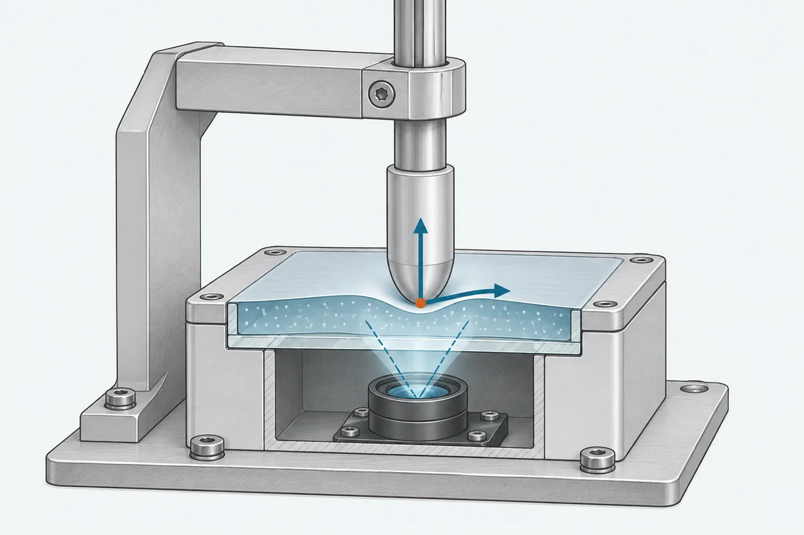

视触觉数据采集与三轴力估计 Visuotactile data acquisition and three-axis force estimation
围绕视触觉传感器的接触力感知，搭建机械臂自动化采集平台，完成三轴力估计模型的训练与实时部署，并构建基于形变网格的触觉图像渲染流程。This project combines automated robotic data acquisition, training and real-time deployment of a three-axis contact force estimator, and tactile image rendering from simulated deformation meshes.

为什么按采集轮次划分训练集与验证集？Why keep an entire acquisition run in one data split?
一次按压的参照The reference for one press
每轮先在无接触时采集参考图像并对力传感器清零。待压头停稳，同一个样本保存接触图像、工具位姿和实测力／力矩。设定的压入深度说明实验条件，传感器读数说明该条件下实际测得的载荷。Each run begins with an unloaded image and a force tare. Once the indenter settles, the sample pairs a contact image with the tool pose and measured wrench. Indentation depth describes the test condition. The sensor reading gives the load measured under that condition.
相邻样本的共同条件What nearby samples share
一轮连续按压共享参考图像和清零基准。若把同一次加载中的相邻帧随机分进两组，训练和验证都可能看到几乎相同的形变，验证误差便难以反映模型在下一轮采集中的表现。Samples from one loading sequence share the reference image and tare. A random frame-level split can put almost identical deformations into both sets, making validation error a poor guide to performance on the next acquisition run.
分别看跨轮次验证与真机预测Read the two evaluations separately
离线验证把整轮数据留出，考察模型在另一轮采集中能否保持表现。真机评估另外在按压和剪切时，逐轴对照实时预测与机械臂反馈的接触力读数。前者考察跨轮次表现，后者能看出一次实际加载中偏差出现在哪个阶段。Offline validation holds out entire runs to test how the model performs on a separate acquisition. In a separate hardware evaluation, real-time predictions are compared axis by axis with forces reported by the robot during indentation and shear. One comparison tests transfer between runs. The other locates discrepancies within an actual loading sequence.
机械臂自动化采集Automated robotic data acquisition
基于 Flexiv 机械臂实现定深按压、定力加载、双向旋转及多方向剪切，支持不同接触位置、载荷和运动路径的重复采集。采集流程包含力矩清零、无接触参考图像获取、到位停稳采样及中断续采。The Flexiv-based acquisition platform supports depth-controlled indentation, force-controlled loading, bidirectional rotation and multidirectional shear across contact locations and loading paths. The acquisition workflow includes torque zeroing, non-contact reference-image capture, sampling after settling and resumption of interrupted runs.
触觉图像与力数据整理Tactile image and force data preparation
关联保存触觉图像、六维力／力矩、工具中心点（TCP）位姿及加载参数。通过轨迹可视化核对采样位置，并将触觉图像与对应的三轴力读数整理为模型训练样本。Tactile images are stored with six-axis force/torque measurements, tool centre point (TCP) poses and loading parameters. Trajectory visualisation supports inspection of sampling locations. The tactile images are paired with the corresponding three-axis force readings to form training samples for the force estimator.
三轴力估计与实时部署Three-axis force estimation and real-time deployment
实现基于 MAE ViT 编码器与双头潜变量结构的力估计模型，完成数据适配、分阶段训练及离线评估。模型部署于采集平台，根据触觉图像实时预测三轴接触力，并在按压与剪切实验中对照机械臂反馈的力读数，分析各分量随加载过程变化的预测误差。A force estimator with a masked autoencoder (MAE)–based Vision Transformer (ViT) encoder and a dual-head latent architecture was implemented, trained in stages and evaluated offline. Deployed on the acquisition platform, it predicts three-axis contact forces from tactile images in real time. Indentation and shear experiments compare these predictions with force readings reported by the robot to analyse component-wise errors throughout loading.
触觉仿真图像生成Rendering simulated tactile images
基于 Blender 搭建形变网格到触觉图像的批量渲染流程，完成接触表面提取、材质配置及参考表面 UV 坐标传递。不同形变状态使用一致的纹理映射，支持单样本预览与并行批量渲染。A Blender pipeline converts simulated deformation meshes into tactile images through contact-surface extraction, material assignment and UV transfer from a reference surface. Consistent texture mapping across deformation states supports single-sample previews and parallel batch rendering.